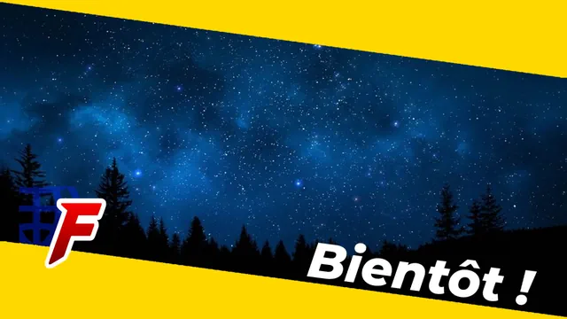

A propos de ce site
Site internet

Terminé
Langue :

Début du projet :
30/06/2022
Fin du projet :
10/08/2022
Langages
R Python
Equipe
Matthieu FARANDJIS
Plus sur le projet
Présentation
Bienvenue sur cette page de présentation de ce site internet !
Ce site permet d'être le lieu central de ma vie professionnel.
En effet, c'est ici que vous retrouverez à la fois mes coordonnées, mon portfolio, ma page de présentation et brièvement mon actualité.
Vu que c'est mon site internet, je voulais que son style représente ma personnalité, mes compétences tout en essayant de garder un aspect professionnel.
Je voulais avant tout que ce site se distingue des autres sites personnels qu'on peut retrouver sur internet.
Souvent ces sites sont composés d'une unique page découpé en différentes sections.
La section portfolio rassemble des différents projets avec une courte description de ceux-ci.
Les couleurs utilisées sont majoritairement similaires, et je trouve qu'il ne nous retienne pas assez l'intention.
J'ai donc pris le choix de me démarquer en faisant un site qui me ressemble.
Ainsi, le site est majoritairement composé des couleurs noires, blanche et grise.
Ce gris n'a pas été trouvé par hasard, en hexadécimal, c'est la couleur #fc8a01. "7" est mon chiffre porte bonheur, et "f"... La première lettre de mon prénom !
Si ces couleurs représente pour moi le sérieux, certains éléments sont plutôt coloré. Ils représentent ma créativité et souvent ce sont des éléments que je souhaites mettre en avant.
Même si j'aime les nouvelles technologies comme tout étudiant en informatique, j'aime aussi les anciennes, c'est l'un de mes nombreux centres d'intérêts.
Cette passion est rappelé par les icones de Windows 9x dans le menu.
Mise à jour prochaine du menu
J'aime bien ce menu, mais je dois avouer qu'il n'est pas parfait.
C'est pour cela qu'une page HTML lui est complètement consacrer, et à l'aide des iframes,
je l'intègre sur les différentes pages.
Dès que j'aurais terminé les pages principales de ce site, je réadapterais le menu pour les ordinateurs.
L'objectif étant de développer toute les catégories directement